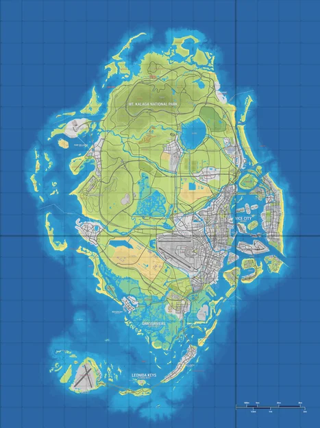

As regiões de Leonida
Leonida é o estado fictício de GTA VI, inspirado na Flórida. O site oficial apresenta seis regiões principais. Conheça cada uma antes de sair explorando.

Leonida em resumo
O mapa de GTA VI mistura cidade grande, praias, ilhas, pântanos, interior industrial e um parque nacional. Cada região tem um clima diferente, e por isso pede veículos e estilos de jogo diferentes.
| Região | Inspiração | Veículo sugerido |
|---|---|---|
| Vice City | Miami | Conversível |
| Leonida Keys | Florida Keys | Lancha |
| Grassrivers | Everglades | Aerobarco |
| Port Gellhorn | A confirmar | Moto |
| Ambrosia | A confirmar | Picape |
| Mount Kalaga | A confirmar | Picape off-road |
O "veículo sugerido" é uma recomendação do guia com base no terreno, não uma informação oficial. Fonte das regiões: Game Informer (abre em nova aba) e site oficial de GTA VI (abre em nova aba).
Conheça cada região
Favorite as regiões que quer visitar primeiro e marque as visitas no checklist.
Carregando as regiões…